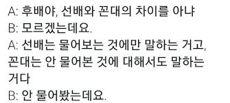
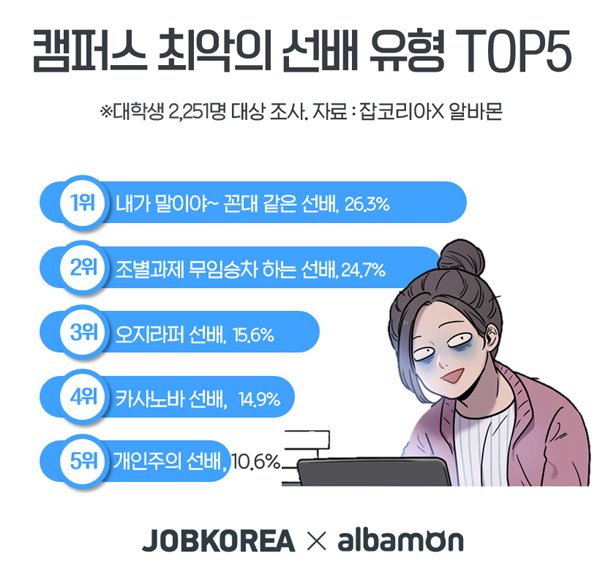
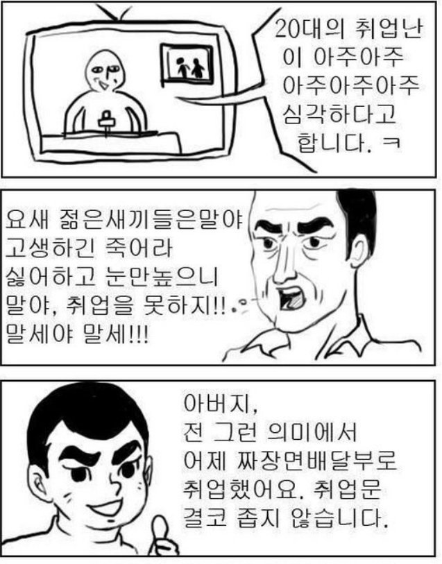

| 꼰대보고서 | |||||||||||||
| 결제 | |||
| 담당꼰대 | 팀꼰대 | 꼰대 | 대표꼰대 |
| 정의 |
| [명사]1.은어로,'늙은이'를 이르는 말. 2.학생들의 은어로, '선생님'을 이르는 말. |
|
나보다 어리거나 지위가 낮은 사람을 훈계하거나 자신의 의도대로 강요하는 사람들을 꼰대라고 합니다. 그리고 이들은 자신보다 어리거나 지위가 낮은 사람들 주변에 서식하며 눈에 두드러지는 특징으로 분류할 수 있습니다. 말머리, 말끝마다 아래 특징이 발견된다면... 맞습니다! |
| 짤 | 짤|||||||||||||
|
선배와 꼰대의 차이.jjal  |
| 짤 | 짤|||||||||||
|
캠퍼스 최악의 선배 1위는 꼰대선배.jjal  |
| 짤 | 짤|||||||||
|
아버지 짜장면배달부에취업했어요.jjal  |
| 5W1H 법 칙 |
|
Who (내가 누군 줄 알아?) What (네가 뭘 안다고?) Where (어딜 감히?) When (내가 왕년엔, 내가 너만 했을 땐 말이야.) How (어떻게 네가 감히?) Why (내가 그걸 왜?) |
|
그리고 꼰대 질량 보존의 법칙에 의거하여 스스로가 꼰대인 것을 모른 채로 서식지 주변을 어슬링 거리기도 합니다. 이들은 영역표시를 위하여 화려한 퍼포먼스를 뽐내기도 하는데, 제일 흔히 볼 수 있는 행동 몇 가지를 소개하겠습니다. 자기중심적인 태도 퇴화된 언어체계 도덕성은 모 아니면 도 나이의 서열화 |
| 꼰대 방지 5계명 |
|
모두 꼰대 방지 5계명을 외쳐봅시다. 하나, 내가 바꿀 수 있는 사람은 없다. 둘, 그때는 맞고 지금은 틀리다. 셋, 존경은 권리가 아니라 성취다. 넷 , 말하지 말고 들어라, 답하지 말고 물어라. 다섯 , 내가 틀렸을지도 모른다. |
| 내용 |
|
1. 라이프 사이클보다 '라이프 스타일'로 대화
인생의 진로, 결혼 등 라이프사이클은 기성세대에게만 관심거리이다. 차라리 취미, 트렌드 등 라이프스타일로 대화하자 2. 화두는 던지되 상대가 대화를 주도하도록 하자 호기심을 표현하면 상대는 말문을 연다. 3.충고나 조언보다 답을 구하자. 요즘 뜨는 곳, 영화 등 그들이 잘 아는 것을 물어보자. 그러면 더 이상 꼰대가 아닌 먼저 대화하고 싶은 상사가 될 것이다. |
꼰대 자가 진단 테스트
1. 사람을 만나면 나이부터 확인하고 나보다 어린 사람에겐 반말을 한다.전혀 그렇지 않다. 조금 그렇지 않다. 그저 그렇다. 조금 그렇다. 아주 그렇다.2. 대체로 명령문으로 말한다.전혀 그렇지 않다. 조금 그렇지 않다. 그저 그렇다. 조금 그렇다. 아주 그렇다.3. 요즘 후배들이 노오력은 하지 않고 불평불만이 많은 것은 사실이라고 생각한다.전혀 그렇지 않다. 조금 그렇지 않다. 그저 그렇다. 조금 그렇다. 아주 그렇다.4. 후배의 장점이나 업적을 보면 자동반사적으로 그의 단점과 약점을 찾게 된다.전혀 그렇지 않다. 조금 그렇지 않다. 그저 그렇다. 조금 그렇다. 아주 그렇다.5. 나보다 늦게 출근하는 후배가 거슬린다.전혀 그렇지 않다. 조금 그렇지 않다. 그저 그렇다. 조금 그렇다. 아주 그렇다.6. 고위공직자나 유명 연예인과의 개인적 인맥을 자꾸 얘기하게 된다.전혀 그렇지 않다. 조금 그렇지 않다. 그저 그렇다. 조금 그렇다. 아주 그렇다.7. 낯선 방식으로 일하는 후배를 보면 제대로 일하는 방식을 알려주고 싶다.전혀 그렇지 않다. 조금 그렇지 않다. 그저 그렇다. 조금 그렇다. 아주 그렇다.8. 내가 한 때 잘 나갔다는 사람이라는 걸 알려주고 싶다.전혀 그렇지 않다. 조금 그렇지 않다. 그저 그렇다. 조금 그렇다. 아주 그렇다.9. 사생활의 영역도 인생 선배로서 답을 제시해줄 수 있다.전혀 그렇지 않다. 조금 그렇지 않다. 그저 그렇다. 조금 그렇다. 아주 그렇다.10. 나보다 성실하고 정열적으로 일하는 사람은 없을 것 같다.전혀 그렇지 않다. 조금 그렇지 않다. 그저 그렇다. 조금 그렇다. 아주 그렇다.11. 후배에게도 배울 게 있다는 말에는 동의하지만, 실제로 배워본 적은 없다.전혀 그렇지 않다. 조금 그렇지 않다. 그저 그렇다. 조금 그렇다. 아주 그렇다.12. 옷차림, 인사예절도 근무에 연관된 것이므로 지적할 수 있다.전혀 그렇지 않다. 조금 그렇지 않다. 그저 그렇다. 조금 그렇다. 아주 그렇다. |